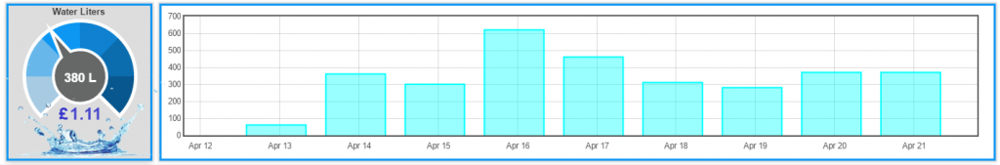

Update
Please note that there was a problem in the way the water meter usage was being log to emoncms. I have tried as many ways as I could think of to used to current input and logging that is built in to emoncms to calculate the usage but all had a common problem that cause to feeds to log incorrect data if the system was rebooted
I am reluctantly going to have to update the guide to incorporate node-red to do some of the function
Why reluctantly you ask this is not a problem with using node-red (I love node-red) I want to make any guides that I write to be accessible to all used from the novice to the experts and I don’t wont to discourage the novice with complicated setup but in this case I’m going to have to use a more complex setup
I have updated the guide with a much detail as I can but if you are having problems please let me known
Please also note you will need to be running one of the later software images that includes node-red
Water Meter Guide
This guide is to show the setup of a water meter with a pulse output. I will be using the pulse input on an EmonTH in this guide but there is no reason the setup will not work with other products in the OEM family that have a pulse input e.g. (Emonpi, etc).
My reason for using the EmonTH is the location of the meter and the pulse input on my Emonpi already being used for monitoring a gas meter (Guide to follow for this too).
Things you will need, where I got mine and costs.
Water meter with pulse output
I’m using a Bell Single-jet Cold Water Meter that cost £25.00 from ebay which pulses once for every 10 litres of water used.
The meter info;
http://www.bellflowsystems.co.uk/single-jet-cold-water-meter-alfa-sj-sdc...
The meter on ebay;
http://www.ebay.co.uk/itm/WRAS-approved-15mm-1-2-Cold-Water-Meter-Option...
EmonTH (As I needed a battery power device for the location and an additional pulse input) I got the DTH22 - Temperature & Humdity with case for £36.36 (inc VAT) you can get the EmonTH cheaper with no case and humidity sensor for £28.56 (inc VAT)
EmonTH on OEM site;
https://shop.openenergymonitor.com/emonth-no-rf-temperature-humidity-node/
10k Resistor £0.29 from maplins;
http://www.maplin.co.uk/p/metal-film-06w-10k-ohm-resistor-m10k
The install:
Water Meter
EmonTH wiring a resistor configuration
The water meter only has two cables (Red & Black) the red goes to the 3.3v on the screwed terminal block, the black goes to the D3 on the screwed terminal block. The resistor is installed between the GND & D3 on the screwed terminal block, the resistor keeps the pulse input at 0 this stops any unwanted additions to your usage if you reboot the EmonTH.
EmonTH back in case
Finished Install

Open red-node in your browser by going to http://(your-ip):1880
Create a new flow and paste the following code
[{"id":"1cf92367.a0b1ad","type":"mqtt-broker","z":"","broker":"127.0.0.1","port":"1883","clientid":"","usetls":false,"verifyservercert":true,"compatmode":true,"keepalive":"15","cleansession":true,"willTopic":"","willQos":"0","willRetain":null,"willPayload":"","birthTopic":"","birthQos":"0","birthRetain":null,"birthPayload":""},{"id":"5ec639ac.78fec8","type":"mqtt in","z":"536ce9ff.5df118","name":"Emonpi","topic":"emon/emonth5/pulsecount","broker":"1cf92367.a0b1ad","x":490,"y":320,"wires":[["c34c254a.da8ab8"]]},{"id":"c34c254a.da8ab8","type":"function","z":"536ce9ff.5df118","name":"X 10","func":"msg.payload = msg.payload * 10;\nreturn msg;","outputs":1,"noerr":0,"x":650,"y":320,"wires":[["810e7aa6.0ff5d8","3ab09144.40de7e"]]},{"id":"810e7aa6.0ff5d8","type":"mqtt out","z":"536ce9ff.5df118","name":"Water Litres","topic":"emon/Water/Litres","qos":"","retain":"","broker":"1cf92367.a0b1ad","x":830,"y":320,"wires":[]},{"id":"3ab09144.40de7e","type":"function","z":"536ce9ff.5df118","name":"X 1000","func":"msg.payload = msg.payload * 1000;\nreturn msg;","outputs":1,"noerr":0,"x":660,"y":380,"wires":[["73d59f42.b6d44"]]},{"id":"73d59f42.b6d44","type":"mqtt out","z":"536ce9ff.5df118","name":"Water Litres A Day","topic":"emon/Water/LitresDay","qos":"","retain":"","broker":"1cf92367.a0b1ad","x":850,"y":380,"wires":[]}]
You should see the follow flow
Double click on the EmonTH node
Click on the pen icon next to the server input box and then go to security tab and enter your mqtt username and password then click update (You can find the username and password for MQTT in the emonhub config file)
Repeat this process for Water Litres & Water Litres A Day nodes and then click Deploy If all goes well all three node should now say connected
How the flow works
EmonTH
This node connects to the EmonTH pulse counter and returns the value
X 10
This node times the pulse counter value by 10 as 1 is = to 10 litres of water
X 1000
This node times the X 10 value by 1000 this is so 10 litres is = to 10 kWh when displayed in a zoom graph
Water Litres
This node sends the value from X 10 back to emoncms
Water Litres A Day
This node sends the value from X 1000 back to emoncms
And thats the node-red bit done ;-)
You should now have a Water Node in inputs on emoncms
Emoncms inputs configuration
Add a Wh Accumulator to the Water Litres node (Logs your water usage)
Add a Total pulse count to pulse increment to the Water LitresDay node (Increment water used)
Add a Wh increments to kWh/d to the Water LitresDay node (logs litres used per day)
Emoncms Feeds
Dashboard Example

This is my first guide on OEM so any feedback is welcome I’m more than happy to edit if anyone has a better way of setting this up
Thanks Steve
Re: Water Meter Guide Updated v2.0
Hi Steve
Thank you for taking the time in producing this well documented project.
Regards
Dave
Re: Water Meter Guide Updated v2.0
Perfect Steve!
I just started to use EmonCMS for ou towns Water treatment. Just waiting for internet in the reservoir so that I can send the data out to my main server.
We have a Siemens Simatic with ModbusTCP which I read out and send the data to a local EmonCMS in the operations control room. Next thing I also wanted to add is a pluse counter which reads the water outflow from the both reservoirs where maybe your guide will become handy for that :-)
Re: Water Meter Guide Updated v2.0
Hi
Great guide !
You should add what sketch must be used.
Eric
Re: Water Meter Guide Updated v2.0
Hi Eric
All stock sketch no mod of any kind I like to try and use the default system setup so it accessible to a user's
Thanks Steve
Re: Water Meter Guide Updated v2.0
Ok but it doesn't tell us which sketch it is.
For old and coming users, it would be difficult to use your guide because the "main" sketch of the EmonTH changed many time in the past and it will change for sure in the future.
Again, great guide except that point.
Eric
Re: Water Meter Guide Updated v2.0
Nice guide!
Re: Water Meter Guide Updated v2.0
Hi all
Please note a change in the Emoncms inputs configuration as there was a error in the usage if you rebooted to system
Guide has been updated
Steve